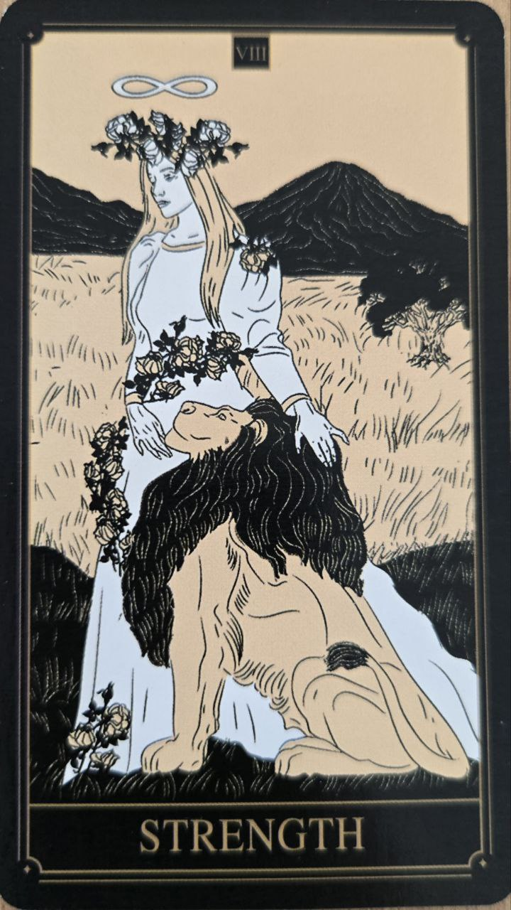

Sila je kartou odvahy, trpezlivosti a vnútornej stability. Na prvý pohľad môže pôsobiť ako karta fyzickej moci, jej skutočný význam však spočíva v schopnosti ovládať vlastné emócie a impulzy.
Predstavuje človeka, ktorý nemusí dokazovať svoju silu navonok, pretože ju už našiel vo svojom vnútri.
Karta symbolizuje sebaovládanie, vytrvalosť a pokojné zvládanie náročných situácií. Naznačuje, že trpezlivosť a pochopenie môžu byť účinnejšie než nátlak alebo agresivita.
Sila často hovorí o odvahe pokračovať aj vtedy, keď výsledok ešte nie je viditeľný.
Najčastejšie zobrazuje človeka, ktorý pokojne kroti leva. Lev predstavuje vášne, emócie a inštinkty, zatiaľ čo človek symbolizuje vedomie a rozvahu.
Dôležité je, že lev nie je porazený silou, ale pochopením.
V mnohých tarotových systémoch je Sila považovaná za jednu z najpozitívnejších kariet, pretože ukazuje schopnosť zvládnuť prekážky bez straty vlastnej rovnováhy.